Gaussian calibration¶
Introduction¶
We consider a computer model  (i.e. a deterministic function)
to calibrate:
(i.e. a deterministic function)
to calibrate:
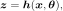
where
 is the input vector;
is the input vector; is the output vector;
is the output vector; are the unknown parameters of
to calibrate.
are the unknown parameters of
to calibrate.
Let  be the number of observations.
The standard hypothesis of the probabilistic calibration is:
be the number of observations.
The standard hypothesis of the probabilistic calibration is:

for  where
where  is a random measurement error.
is a random measurement error.
The goal of gaussian calibration is to estimate  , based on
observations of
, based on
observations of  inputs
inputs  and the associated observations of the output
and the associated observations of the output
 .
In other words, the calibration process reduces the discrepancy between
the observations and the
predictions
.
In other words, the calibration process reduces the discrepancy between
the observations and the
predictions  .
Given that are realizations of a
random variable, the estimate of , denoted by
.
Given that are realizations of a
random variable, the estimate of , denoted by
 , is also a random variable.
Hence, the secondary goal of calibration is to estimate the distribution of
representing the uncertainty of the calibration
process.
, is also a random variable.
Hence, the secondary goal of calibration is to estimate the distribution of
representing the uncertainty of the calibration
process.
In the remaining of this section, the input  is not involved
anymore in the equations.
This is why we simplify the equation into:
is not involved
anymore in the equations.
This is why we simplify the equation into:
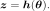
Bayesian calibration¶
The bayesian calibration framework is based on two hypotheses.
The first hypothesis is that the parameter has
a known distribution, called the prior distribution, and denoted by
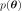
.The second hypothesis is that the output observations
are sampled from a known conditional distribution denoted by
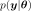
.For any
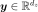
such that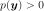
, the Bayes theorem implies that the conditional distribution of given  is:
is:
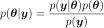
for any  .
.
The denominator of the previous Bayes fraction is independent of , so that
the posterior distribution is proportional to the numerator:
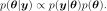
for any .
In the gaussian calibration, the two previous distributions are assumed to be gaussian.
More precisely, we make the hypothesis that the parameter
has the gaussian distribution:
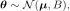
where  is the mean of the gaussian prior distribution,
which is named the background and is the covariance
matrix of the parameter.
is the mean of the gaussian prior distribution,
which is named the background and is the covariance
matrix of the parameter.
Secondly, we make the hypothesis that the output observations have the conditional gaussian distribution:
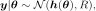
where
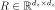
is the covariance matrix of the output observations.Posterior distribution¶
Denote by
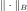
the Mahalanobis distance associated with the matrix :
:
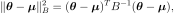
for any
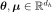
. Denote by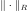
the Mahalanobis distance associated with the matrix :
:
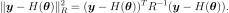
for any and any  .
Therefore, the posterior distribution of given the observations is :
.
Therefore, the posterior distribution of given the observations is :
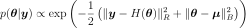
for any .
MAP estimator¶
The maximum of the posterior distribution of given the observations is
reached at :
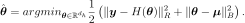
It is called the maximum a posteriori posterior estimator or MAP estimator.
Regularity of solutions of the Gaussian Calibration¶
The gaussian calibration is a tradeoff, so that the
second expression acts as a spring which pulls the parameter
closer to the background  (depending on the “spring constant” ,
meanwhile getting as close a possible to the observations.
Depending on the matrix , the computation may have
better regularity properties than the plain non linear least squares problem.
(depending on the “spring constant” ,
meanwhile getting as close a possible to the observations.
Depending on the matrix , the computation may have
better regularity properties than the plain non linear least squares problem.
Non Linear Gaussian Calibration : 3DVAR¶
The cost function of the gaussian nonlinear calibration problem is :
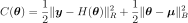
for any .
The goal of the non linear gaussian calibration is to find the
value of which minimizes the cost function  .
In general, this involves using a nonlinear unconstrained optimization solver.
.
In general, this involves using a nonlinear unconstrained optimization solver.
Let  be the Jacobian matrix made of the
partial derivatives of with respect to :
be the Jacobian matrix made of the
partial derivatives of with respect to :

The Jacobian matrix of the cost function can be expressed
depending on the matrices and and the Jacobian matrix
of the function  :
:
for any .
The Hessian matrix of the cost function is
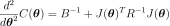
for any .
If the covariance matrix is positive definite,
then the Hessian matrix of the cost function is positive definite.
Under this hypothesis, the solution of the nonlinear gaussian calibration is unique.
Solving the Non Linear Gaussian Calibration Problem¶
The implementation of the resolution of the gaussian non linear calibration
problem involves the Cholesky decomposition of the covariance matrices
and .
This allows to transform the sum of two Mahalanobis distances into a single
euclidian norm.
This leads to a classical non linear least squares problem.
Linear Gaussian Calibration : bayesian BLUE¶
We make the hypothesis that $h$ is linear with respect to ,
i.e., for any , we have :
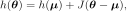
where  is the constant Jacobian matrix of .
is the constant Jacobian matrix of .
Let
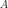
be the matrix: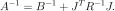
We denote by  the Kalman matrix:
the Kalman matrix:
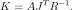
The maximum of the posterior distribution of given the
observations is:
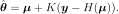
It can be proved that:
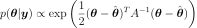
for any .
This implies:
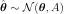
API:
References:
Bingham and John M. Fry (2010). Regression, Linear Models in Statistics, Springer Undergraduate Mathematics Series. Springer.
Huet, A. Bouvier, M.A. Poursat, and E. Jolivet (2004). Statistical Tools for Nonlinear Regression, Springer.
Rasmussen and C. K. I. Williams (2006), Gaussian Processes for Machine Learning, The MIT Press.